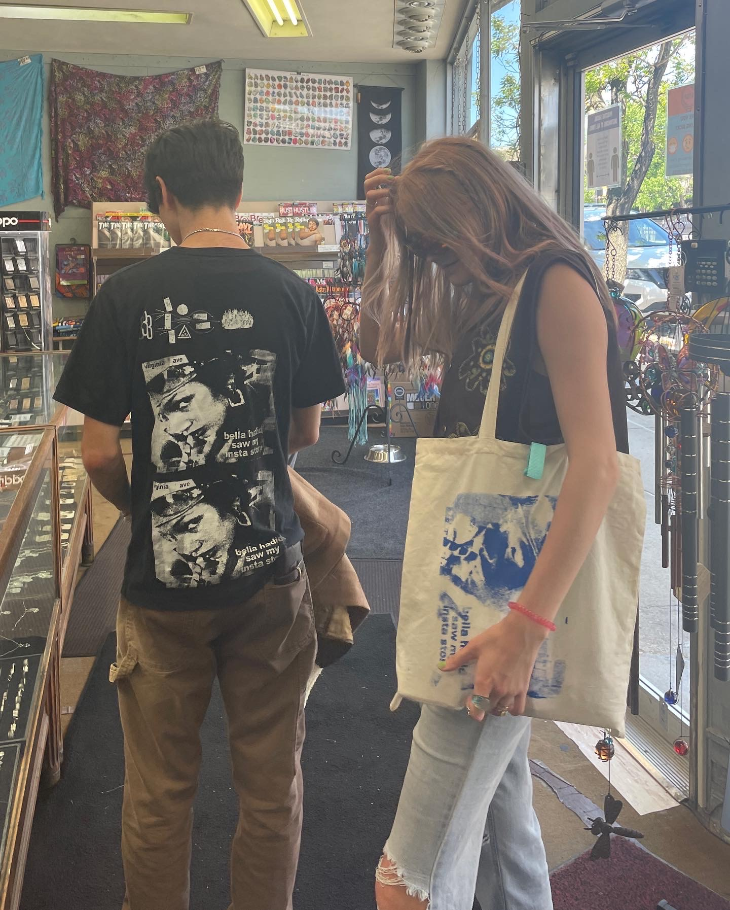
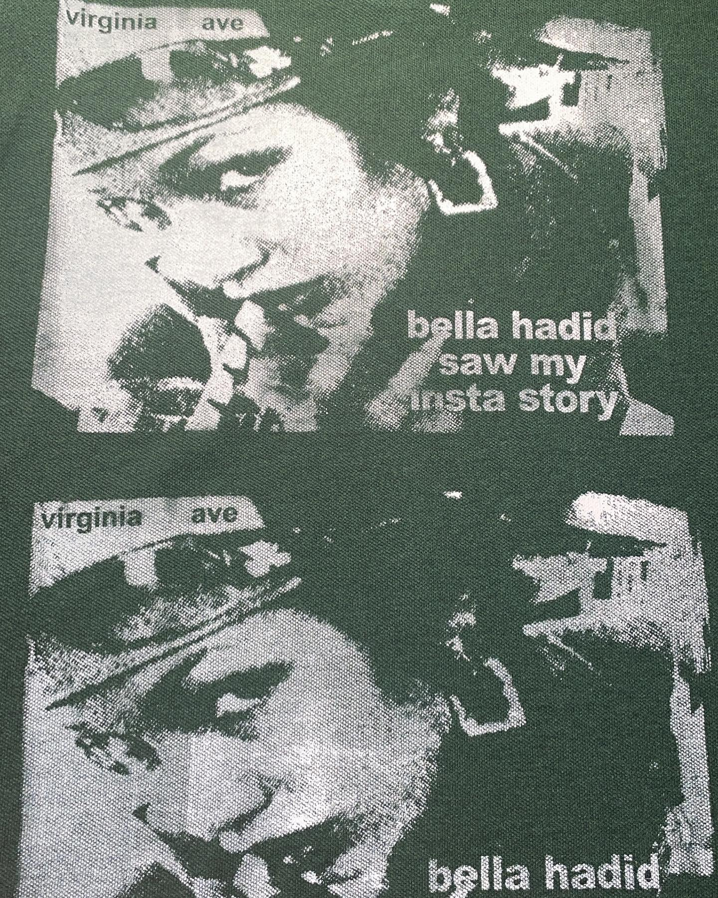
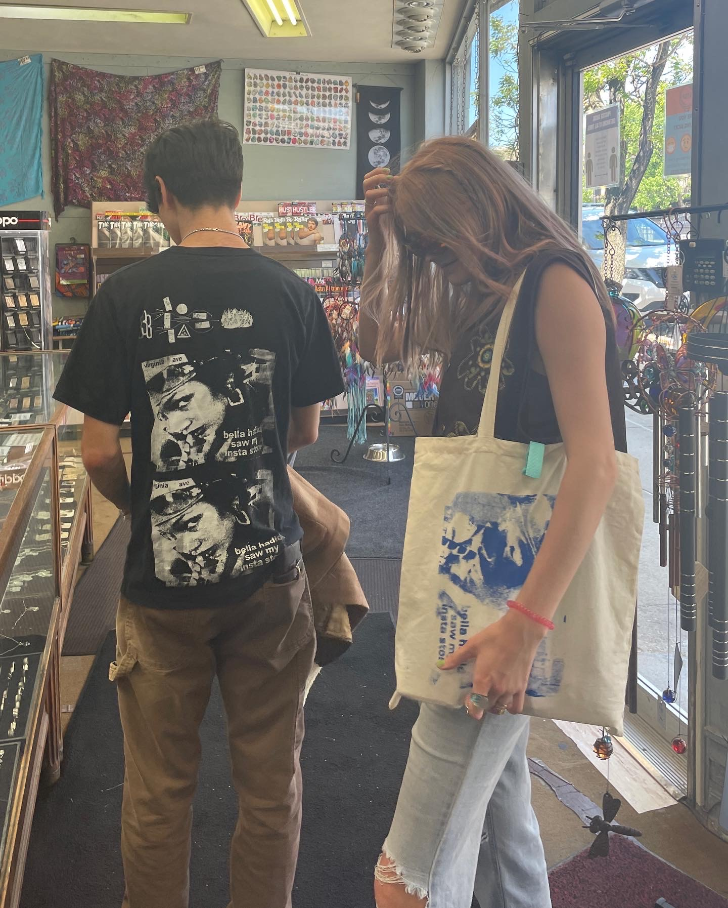
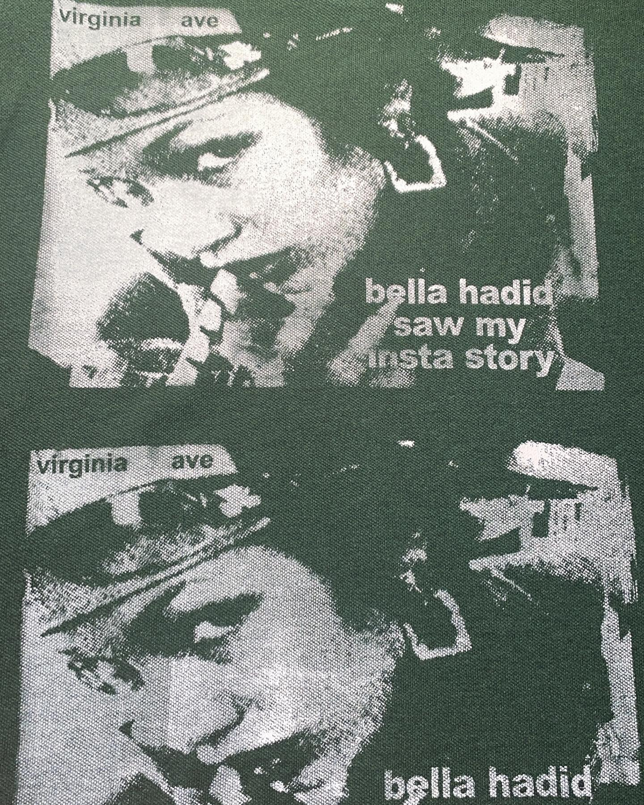

In late April, I tagged Bella Hadid in an Instagram story on a
meme account I run with friends. The picture was a deep fried gag of
of a high school friend, Sarah. I woke up to see 'bellahadid' with a blue checkmark
under the story viewers. It hurts knowing I wasted a moment of Bella Hadid's
attention (it was probably her PR team, but I can dream) on a joke. Even though
the interaction was irrelevant, I'm not ashamed to clout chase if I had an online
brush with the 8th highest paid model in the world and the woman who inspired
most of The Weeknd's (good) songs
I wanted to be annoying and make a design that immortalized this interaction.
The image was taken from Bella's Instagram via screenshot. In Photoshop, I
stretched the image, played with levels, added grain,
and text. I inverted the image to screenprint on a dark garment,
the passing ink being the highlights.
My friends Andrew, Tate, and Colin often make their own designs and screens.
Colin walked me through the emulsion process and helped with the graphic -
he put on the halftone, printed on transparency, and supplied the glass and
light to burn the design. With his help, I've been
able to apply designs to other people's garments.
 



After the Bella screen, I wanted to try and do something
simple, because I didn't have access to the equipment Colin had
(aka I was too lazy to take my transparency paper to Ellis. My printer
settings wouldn't take the transparency). A text design was ideal,
since there is minimal detail and only shapes with defined edges. I came
across this ad for Aphex Twin's Selected Ambient Works. I created outlines
via Illustrator and singled out the text. I rearranged and stretched out
the text then printed it on normal paper. I coated a small pre-made screen
from a kit with green diazo emulsion and took the design on normal printer
paper and made it transparent via oil. To burn the image, I went outside in
the sun and held the design up for 15-20 seconds. The design came out decent
after rinsing the screen. This screen was the first I made by myself, but it
took a lot of trial and error with the emulsion (I had problems with drying
in the dark and exposing too early).


I saw this newspaper headline and thought it would be
a good print. I had to take two different newspages and
make them look like the same page, since I wanted the headline
but not the picture that was used. The screen didn't come
out very well, using the same sun/oil method as the Aphex Twin
screen. There was a lot more detail in this graphic and the
oil didn't burn the halftoned details all the way through.


ALL IMAGES SHOT & EDITED BY
BILLIE HUANG